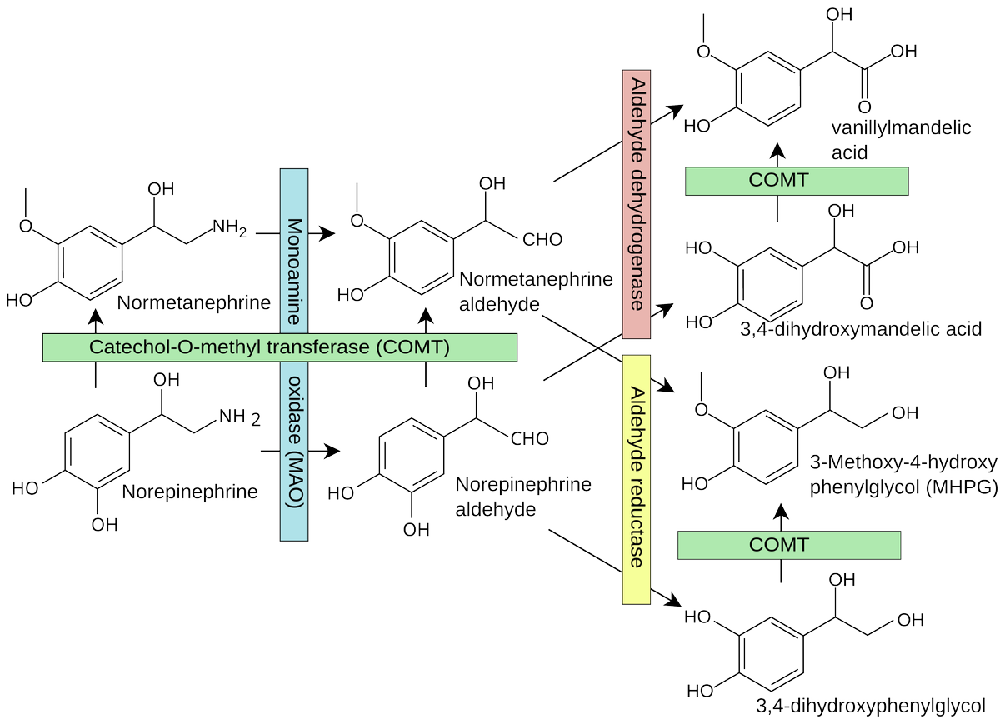

更令人担忧的是，众所周知，中国人的醛类脱氢酶(ADLH)活性普遍较低，比如你可能喝一点点酒就会脸红。
这就极有可能导致此类醛类物质的代谢更慢，导致大量累积。恶化中国人对于涉MAO底物的药物(DMT,苯乙胺)的不良反应。
所以窝建议，若要服用此类物质，为避免ALDH被乙醛竞争性抑制，不要同时喝酒哦🥹

这就极有可能导致此类醛类物质的代谢更慢，导致大量累积。恶化中国人对于涉MAO底物的药物(DMT,苯乙胺)的不良反应。
所以窝建议，若要服用此类物质，为避免ALDH被乙醛竞争性抑制，不要同时喝酒哦🥹

众所周知，许多精神类物质(如多巴胺、色胺类物质)是单胺氧化酶(MAO)的底物🤓它们大多有一个涉MAO的代谢通路，如图所示：
该代谢途径会产生由底物被氧化而形成的醛类物质、过氧化氢和氨，可能会有神经毒性。这种毒性可能在存在大量外源的MAO底物的情况下，例如人为大量服用DMT、苯乙胺等，情况下加重🥺 https://t.co/VxlPcn4r83
该代谢途径会产生由底物被氧化而形成的醛类物质、过氧化氢和氨，可能会有神经毒性。这种毒性可能在存在大量外源的MAO底物的情况下，例如人为大量服用DMT、苯乙胺等，情况下加重🥺 https://t.co/VxlPcn4r83